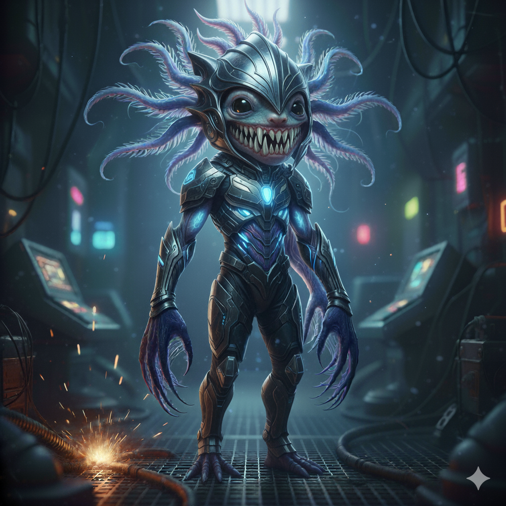

ATLAS MUTATIS
FMD50XP | FONDA DUTTON | WORLD ARCHITECT & CREATIVE DIRECTOR
PROJECT: THE NOCTULUC ETHEREAL
THE INCEPTION: BORN FROM A MULTI-SPECIES BIOLOGICAL MERGE. THIS CREATURE IS THE PINNACLE OF SCI-FI HORROR ARCHITECTURE.
THE PROVENANCE OF THE NOCTULUC ETHEREAL: FONDA DUTTON (DIRECTOR)
DIRECTORIAL BREAKDOWN (90%):
THE BLUEPRINT: THE ORIGINAL, INCREDIBLY SPECIFIC PROMPT. THIS FOUNDATION IS ENTIRELY A PRODUCT OF HER IMAGINATION.
THE CHARACTER: DEFINED ROLE WITHIN ATLAS MUTATIS, CRAFTING ITS STORY AND ITS POWER.
THE SELECTION: ITERATED, REVISED, AND ACTED AS THE FINAL FILTER, FINALIZING THE SPECIFIC ITERATION.
AI CONTRIBUTION (10%):
THE HEAVY LIFTING: TECHNICAL LABOR OF BLENDING DISTINCT BIOLOGIES AND COMPLEX RENDERING.
CLASSIFIED SUBJECT: NOCTULUC ETHEREAL
[02] BIOMETRIC SIGNATURES DETECTED
STATUS: ACTIVE / UNKNOWN
[04] BIOMETRIC SIGNATURES DETECTED
STATUS: TERMINATED
PROJECT SUMMARY: Biological Synthesis / Cross-Species Merging. The Noctuluc Ethereal is a finite, engineered predator. Its lethality is derived from the following synthesis matrix:
| Merged Entity | Designated Ability |
|---|---|
| Axolotl | Rapid cellular regeneration |
| Blue Glaucus | Concentrated lethal toxin |
| Aardwolf | Predatory surgical precision |
| Sub-acoustic Fauna | Vibrational structural failure |
| Mimicry Organism | Psychological disorientation |
| Wombat | High-density kinetic impact |
| Apex Predator | Extreme brute force |
| Hydraulic Specialist | Mechanical system sabotage |
LOCATION: SECTOR 4 - STASIS CHAMBER (SEE MAP)
MULTIMEDIA PROVENANCE & IDENTIFICATION
FMD PROCESS VISUAL

EVALUATION OF CREATION (FMD PROCESS LOG)
3D CHARACTER ARCHIVE: THE NOCTULUC ETHEREAL
THE NOCTULUC ETHEREAL KILL LIST AND POWERS
| CHARACTER | ROLE / JOB | FATE | PERSONALITY |
|---|---|---|---|
| Dr. Peter Brandt | Geologist | Ability: Axolotl Regeneration. Eliminated following rapid tissue regrowth. |
Drive: Irrational Optimism Flaw: Physical Exhaustion |
| Tessa Young | Intern | Ability: Blue Glaucus Venom. Instant termination via direct toxic contact. |
Drive: Boredom Flaw: Flashbacks to Trauma |
| Samir Hassan | Comms tech | Ability: Aardwolf Precision. Silenced after the creature breached secure channels. |
Drive: Hidden Altruism Flaw: Paranoia |
| "Red" Kelly | Pilot | The Kill: Eliminated via pressure implosion after psychological sabotage of the hull. | Drive: Spiritual Enlightenment Flaw: Slightly Delusional |
| Lena | Chef | Ability: The "Smiling" Axolotl Face. Immobilized by shock. Extracted via Mimicry. |
Drive: Intellectual Superiority Flaw: Obsessive-Compulsive |
| Marco Solis | Technician | Ability: The Wombat Butt (Armored Ram). Catastrophic kinetic impact. (Zoom Zoom Boom Splat). |
Drive: Unwavering Duty Flaw: Superstitious Fear |
| Captain Rostova | Captain | Ability: Brute Force. Taken out defending Command Hub. |
Drive: Unwavering Duty Flaw: Inability to trust logic |
| Dr. Kai Lin | Biologist | Ability: Rapid Regeneration. Biological warfare attempts were instantly negated. |
Drive: Unwavering Duty Flaw: Naivety |
| Lt. Alex Mercer | Lieutenant | Ability: Hydraulic Sabotage. Catastrophic failure of the main hatch lines. |
Drive: Desire for Control Flaw: Hypochondria |
| Dr. Elias Vance | Scientist | CAPTURE: Taken alive to Atlantis due to ancient biometric signature. | Drive: Resentment of Authority Flaw: Self-Sabotage |
| Daniel Rhee | Architect | SURVIVOR: Escaped. Carries severe psychological guilt. | [LOCKED] |
| Jada Hayes | Maintenance | Survivor: Escaped by lying to Daniel about Vance's death. | Drive: Redemption Flaw: Stubbornness |
THE SOUNDSTAGE: OPERATIONAL LOGS
ORIGINAL CREATOR LYRICS (FONDA DUTTON)
(Verse 1)
we are not on the beach, it's a hull breach...
the screams... eyes like evil streams...
pressure's dropping fast. I don't think my life will last.
That biomechanical horror has broke through the door,
a laughing Axolotl mask. has me on his next task.
God what a ass.
He’s running towards me through that twisted passageway...
what more can I say? Oh god those eyes, the deathly kind.
That Smiling Axolotl face will haunt throughout this place.
(Chorus)
It's spinning now to the back side. I need to run I need to hide.
ZOOM ZOOM BOOM SPLAT. What the heck was that.
YOU SMASH ME WITH YOUR BACK.
(Outro)
Eternal life... final death... In the deep, I take my final breath.
Zoom... zoom... boom... What the hell was that?